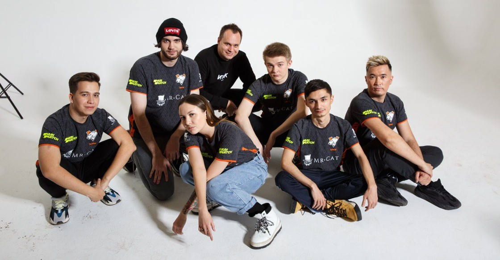

Aktualne Virtus Pro
– To istotny dzień dla VP, jako że otwieramy nowy rozdział w naszej historii z Counter-Strike – przyznał Roman Dvoryankin, generalny menadżer Virtus.pro. Tym samym VP zatoczyło koło i po wielu latach przerwy powróciło na scenę CS-a w regionie CIS. Wiele wskazuje jednak, że włodarze z Rosji musieli słono za to zapłacić, bo według nieoficjalnych doniesień transfer drugiej najlepszej ekipy StarLadder Major Berlin 2019 miał kosztować od 1,2 do nawet 1,5 miliona dolarów. Pierwszą odpowiedź na to pytanie miało dać EPICENTER 2019, na którym podopieczni dastana pojawili się zaledwie dzień po tym, jak potwierdzono ich przenosiny. Oczekiwania, co oczywiste, były spore, tym większy był więc zawód, gdy okazało się, że VP nie prezentuje formy z Berlina. O ile porażka z mousesports jeszcze tak dużą wpadką nie była, tak uznanie wyższość forZe można już za taką spokojnie uznać. W efekcie Virtusi odpadli już w fazie grupowej z bilansem 0-2, nic więc dziwnego, że z miejsca zaczęto kwestionować decyzję organizacji o zaangażowaniu niesprawdzonej do końca drużyny. – Myślę, że dla wszystkich jest oczywiste, że nie jest to wynik, którego wszyscy się spodziewaliśmy i na który liczyliśmy. Doskonale rozumiemy, pod jaką presją był zespół w związku z trwającymi kilka ostatnich tygodni przygotowaniami do transferu i jasne jest, że chłopaki niestety nie poradzili sobie z tą presją. Nie należy wyciągać z tego ostatecznych, długofalowych wniosków – jesteśmy na samym początku podróży – uspokajał wówczas Dvoryankin. Skład zespołu:| Dzhami „Jame” Ali | Rosja |
| Timur "buster" Tulepov | Kazachstan |
| Mareks „Yekindar” Gaļinskis | Łotwa |
| Sanjar „Sanji” Kuliev | Uzbekistan |
| Alexey „Qikert” Golubev | Kazachstan |
